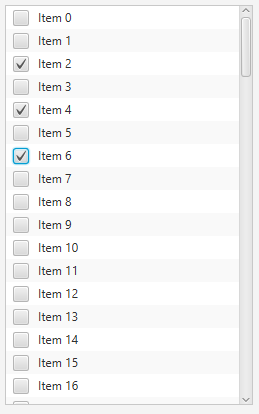

T - The type of the data in the CheckListView.public class CheckListView<T>
extends javafx.scene.control.ListView<T>
check model to request the current selection
state.
The following screenshot shows the CheckListView with some sample data:

To create the CheckListView shown in the screenshot, simply do the following:
// create the data to show in the CheckListView
final ObservableList<String> strings = FXCollections.observableArrayList();
for (int i = 0; i <= 100; i++) {
strings.add("Item " + i);
}
// Create the CheckListView with the data
final CheckListView<String> checkListView = new CheckListView<>(strings);
// and listen to the relevant events (e.g. when the selected indices or
// selected items change).
checkListView.getCheckModel().getCheckedItems().addListener(new ListChangeListener<String>() {
public void onChanged(ListChangeListener.Change<? extends String> c) {
System.out.println(checkListView.getCheckModel().getCheckedItems());
}
});
| Type | Property and Description |
|---|---|
javafx.beans.property.ObjectProperty<IndexedCheckModel<T>> |
checkModel
The check model provides the API through which it is possible
to check single or multiple items within a CheckListView, as well as inspect
which items have been checked by the user.
|
cellFactory, editable, editingIndex, fixedCellSize, focusModel, items, onEditCancel, onEditCommit, onEditStart, onScrollTo, orientation, placeholder, selectionModelcontextMenu, skinClassName, skin, tooltipbackground, border, cacheShape, centerShape, height, insets, maxHeight, maxWidth, minHeight, minWidth, opaqueInsets, padding, prefHeight, prefWidth, scaleShape, shape, snapToPixel, widthaccessibleHelp, accessibleRoleDescription, accessibleRole, accessibleText, blendMode, boundsInLocal, boundsInParent, cacheHint, cache, clip, cursor, depthTest, disabled, disable, effectiveNodeOrientation, effect, eventDispatcher, focused, focusTraversable, hover, id, impl_showMnemonics, impl_treeVisible, inputMethodRequests, layoutBounds, layoutX, layoutY, localToParentTransform, localToSceneTransform, managed, mouseTransparent, nodeOrientation, onContextMenuRequested, onDragDetected, onDragDone, onDragDropped, onDragEntered, onDragExited, onDragOver, onInputMethodTextChanged, onKeyPressed, onKeyReleased, onKeyTyped, onMouseClicked, onMouseDragEntered, onMouseDragExited, onMouseDragged, onMouseDragOver, onMouseDragReleased, onMouseEntered, onMouseExited, onMouseMoved, onMousePressed, onMouseReleased, onRotate, onRotationFinished, onRotationStarted, onScrollFinished, onScroll, onScrollStarted, onSwipeDown, onSwipeLeft, onSwipeRight, onSwipeUp, onTouchMoved, onTouchPressed, onTouchReleased, onTouchStationary, onZoomFinished, onZoom, onZoomStarted, opacity, parent, pickOnBounds, pressed, rotate, rotationAxis, scaleX, scaleY, scaleZ, scene, style, translateX, translateY, translateZ, visible| Constructor and Description |
|---|
CheckListView()
Creates a new CheckListView instance with an empty list of choices.
|
CheckListView(javafx.collections.ObservableList<T> items)
Creates a new CheckListView instance with the given items available as
choices.
|
| Modifier and Type | Method and Description |
|---|---|
javafx.beans.property.ObjectProperty<IndexedCheckModel<T>> |
checkModelProperty()
The check model provides the API through which it is possible
to check single or multiple items within a CheckListView, as well as inspect
which items have been checked by the user.
|
IndexedCheckModel<T> |
getCheckModel()
Returns the currently installed check model.
|
javafx.beans.property.BooleanProperty |
getItemBooleanProperty(int index)
Returns the
BooleanProperty for a given item index in the
CheckListView. |
javafx.beans.property.BooleanProperty |
getItemBooleanProperty(T item)
Returns the
BooleanProperty for a given item in the
CheckListView. |
void |
setCheckModel(IndexedCheckModel<T> value)
Sets the 'check model' to be used in the CheckListView - this is the
code that is responsible for representing the selected state of each
CheckBox - that is, whether each CheckBox is checked or
not (and not to be confused with the
selection model concept, which is used in the ListView control to
represent the selection state of each row).. |
cellFactoryProperty, createDefaultSkin, edit, editableProperty, editAnyEvent, editCancelEvent, editCommitEvent, editingIndexProperty, editStartEvent, fixedCellSizeProperty, focusModelProperty, getCellFactory, getClassCssMetaData, getControlCssMetaData, getEditingIndex, getFixedCellSize, getFocusModel, getItems, getOnEditCancel, getOnEditCommit, getOnEditStart, getOnScrollTo, getOrientation, getPlaceholder, getSelectionModel, isEditable, itemsProperty, onEditCancelProperty, onEditCommitProperty, onEditStartProperty, onScrollToProperty, orientationProperty, placeholderProperty, queryAccessibleAttribute, refresh, scrollTo, scrollTo, selectionModelProperty, setCellFactory, setEditable, setFixedCellSize, setFocusModel, setItems, setOnEditCancel, setOnEditCommit, setOnEditStart, setOnScrollTo, setOrientation, setPlaceholder, setSelectionModelcomputeMaxHeight, computeMaxWidth, computeMinHeight, computeMinWidth, computePrefHeight, computePrefWidth, contextMenuProperty, executeAccessibleAction, getBaselineOffset, getContextMenu, getCssMetaData, getSkin, getTooltip, impl_cssGetFocusTraversableInitialValue, impl_processCSS, isResizable, layoutChildren, setContextMenu, setSkin, setTooltip, skinClassNameProperty, skinProperty, tooltipPropertybackgroundProperty, borderProperty, cacheShapeProperty, centerShapeProperty, getBackground, getBorder, getHeight, getInsets, getMaxHeight, getMaxWidth, getMinHeight, getMinWidth, getOpaqueInsets, getPadding, getPrefHeight, getPrefWidth, getShape, getUserAgentStylesheet, getWidth, heightProperty, impl_computeContains, impl_computeGeomBounds, impl_computeLayoutBounds, impl_createPeer, impl_notifyLayoutBoundsChanged, impl_pickNodeLocal, impl_updatePeer, insetsProperty, isCacheShape, isCenterShape, isScaleShape, isSnapToPixel, layoutInArea, layoutInArea, layoutInArea, layoutInArea, maxHeight, maxHeightProperty, maxWidth, maxWidthProperty, minHeight, minHeightProperty, minWidth, minWidthProperty, opaqueInsetsProperty, paddingProperty, positionInArea, positionInArea, prefHeight, prefHeightProperty, prefWidth, prefWidthProperty, resize, scaleShapeProperty, setBackground, setBorder, setCacheShape, setCenterShape, setHeight, setMaxHeight, setMaxSize, setMaxWidth, setMinHeight, setMinSize, setMinWidth, setOpaqueInsets, setPadding, setPrefHeight, setPrefSize, setPrefWidth, setScaleShape, setShape, setSnapToPixel, setWidth, shapeProperty, snappedBottomInset, snappedLeftInset, snappedRightInset, snappedTopInset, snapPosition, snapSize, snapSpace, snapToPixelProperty, widthPropertygetChildren, getChildrenUnmodifiable, getImpl_traversalEngine, getManagedChildren, getStylesheets, impl_getAllParentStylesheets, impl_processMXNode, impl_traversalEngineProperty, isNeedsLayout, layout, lookup, needsLayoutProperty, requestLayout, requestParentLayout, setImpl_traversalEngine, setNeedsLayout, updateBoundsaccessibleHelpProperty, accessibleRoleDescriptionProperty, accessibleRoleProperty, accessibleTextProperty, addEventFilter, addEventHandler, applyCss, autosize, blendModeProperty, boundsInLocalProperty, boundsInParentProperty, buildEventDispatchChain, cacheHintProperty, cacheProperty, clipProperty, computeAreaInScreen, contains, contains, containsBounds, cursorProperty, depthTestProperty, disabledProperty, disableProperty, effectiveNodeOrientationProperty, effectProperty, eventDispatcherProperty, fireEvent, focusedProperty, focusTraversableProperty, getAccessibleHelp, getAccessibleRole, getAccessibleRoleDescription, getAccessibleText, getBlendMode, getBoundsInLocal, getBoundsInParent, getCacheHint, getClip, getContentBias, getCursor, getDepthTest, getEffect, getEffectiveNodeOrientation, getEventDispatcher, getId, getInputMethodRequests, getLayoutBounds, getLayoutX, getLayoutY, getLocalToParentTransform, getLocalToSceneTransform, getNodeOrientation, getOnContextMenuRequested, getOnDragDetected, getOnDragDone, getOnDragDropped, getOnDragEntered, getOnDragExited, getOnDragOver, getOnInputMethodTextChanged, getOnKeyPressed, getOnKeyReleased, getOnKeyTyped, getOnMouseClicked, getOnMouseDragEntered, getOnMouseDragExited, getOnMouseDragged, getOnMouseDragOver, getOnMouseDragReleased, getOnMouseEntered, getOnMouseExited, getOnMouseMoved, getOnMousePressed, getOnMouseReleased, getOnRotate, getOnRotationFinished, getOnRotationStarted, getOnScroll, getOnScrollFinished, getOnScrollStarted, getOnSwipeDown, getOnSwipeLeft, getOnSwipeRight, getOnSwipeUp, getOnTouchMoved, getOnTouchPressed, getOnTouchReleased, getOnTouchStationary, getOnZoom, getOnZoomFinished, getOnZoomStarted, getOpacity, getParent, getProperties, getPseudoClassStates, getRotate, getRotationAxis, getScaleX, getScaleY, getScaleZ, getScene, getStyle, getStyleableParent, getStyleClass, getTransforms, getTranslateX, getTranslateY, getTranslateZ, getTypeSelector, getUserData, hasProperties, hoverProperty, idProperty, impl_clearDirty, impl_computeIntersects, impl_cssGetCursorInitialValue, impl_findStyles, impl_geomChanged, impl_getLeafTransform, impl_getMatchingStyles, impl_getPeer, impl_getPivotX, impl_getPivotY, impl_getPivotZ, impl_getStyleMap, impl_hasTransforms, impl_intersects, impl_intersectsBounds, impl_isDirty, impl_isDirtyEmpty, impl_isShowMnemonics, impl_isTreeVisible, impl_layoutBoundsChanged, impl_markDirty, impl_pickNode, impl_processCSS, impl_reapplyCSS, impl_setShowMnemonics, impl_setStyleMap, impl_showMnemonicsProperty, impl_syncPeer, impl_transformsChanged, impl_traverse, impl_treeVisibleProperty, inputMethodRequestsProperty, intersects, intersects, isCache, isDisable, isDisabled, isFocused, isFocusTraversable, isHover, isManaged, isMouseTransparent, isPickOnBounds, isPressed, isVisible, layoutBoundsProperty, layoutXProperty, layoutYProperty, localToParent, localToParent, localToParent, localToParent, localToParent, localToParentTransformProperty, localToScene, localToScene, localToScene, localToScene, localToScene, localToScene, localToScene, localToScene, localToScene, localToScene, localToSceneTransformProperty, localToScreen, localToScreen, localToScreen, localToScreen, localToScreen, lookupAll, managedProperty, mouseTransparentProperty, nodeOrientationProperty, notifyAccessibleAttributeChanged, onContextMenuRequestedProperty, onDragDetectedProperty, onDragDoneProperty, onDragDroppedProperty, onDragEnteredProperty, onDragExitedProperty, onDragOverProperty, onInputMethodTextChangedProperty, onKeyPressedProperty, onKeyReleasedProperty, onKeyTypedProperty, onMouseClickedProperty, onMouseDragEnteredProperty, onMouseDragExitedProperty, onMouseDraggedProperty, onMouseDragOverProperty, onMouseDragReleasedProperty, onMouseEnteredProperty, onMouseExitedProperty, onMouseMovedProperty, onMousePressedProperty, onMouseReleasedProperty, onRotateProperty, onRotationFinishedProperty, onRotationStartedProperty, onScrollFinishedProperty, onScrollProperty, onScrollStartedProperty, onSwipeDownProperty, onSwipeLeftProperty, onSwipeRightProperty, onSwipeUpProperty, onTouchMovedProperty, onTouchPressedProperty, onTouchReleasedProperty, onTouchStationaryProperty, onZoomFinishedProperty, onZoomProperty, onZoomStartedProperty, opacityProperty, parentProperty, parentToLocal, parentToLocal, parentToLocal, parentToLocal, parentToLocal, pickOnBoundsProperty, pressedProperty, pseudoClassStateChanged, relocate, removeEventFilter, removeEventHandler, requestFocus, resizeRelocate, rotateProperty, rotationAxisProperty, scaleXProperty, scaleYProperty, scaleZProperty, sceneProperty, sceneToLocal, sceneToLocal, sceneToLocal, sceneToLocal, sceneToLocal, sceneToLocal, sceneToLocal, sceneToLocal, screenToLocal, screenToLocal, screenToLocal, setAccessibleHelp, setAccessibleRole, setAccessibleRoleDescription, setAccessibleText, setBlendMode, setCache, setCacheHint, setClip, setCursor, setDepthTest, setDisable, setDisabled, setEffect, setEventDispatcher, setEventHandler, setFocused, setFocusTraversable, setHover, setId, setInputMethodRequests, setLayoutX, setLayoutY, setManaged, setMouseTransparent, setNodeOrientation, setOnContextMenuRequested, setOnDragDetected, setOnDragDone, setOnDragDropped, setOnDragEntered, setOnDragExited, setOnDragOver, setOnInputMethodTextChanged, setOnKeyPressed, setOnKeyReleased, setOnKeyTyped, setOnMouseClicked, setOnMouseDragEntered, setOnMouseDragExited, setOnMouseDragged, setOnMouseDragOver, setOnMouseDragReleased, setOnMouseEntered, setOnMouseExited, setOnMouseMoved, setOnMousePressed, setOnMouseReleased, setOnRotate, setOnRotationFinished, setOnRotationStarted, setOnScroll, setOnScrollFinished, setOnScrollStarted, setOnSwipeDown, setOnSwipeLeft, setOnSwipeRight, setOnSwipeUp, setOnTouchMoved, setOnTouchPressed, setOnTouchReleased, setOnTouchStationary, setOnZoom, setOnZoomFinished, setOnZoomStarted, setOpacity, setPickOnBounds, setPressed, setRotate, setRotationAxis, setScaleX, setScaleY, setScaleZ, setStyle, setTranslateX, setTranslateY, setTranslateZ, setUserData, setVisible, snapshot, snapshot, startDragAndDrop, startFullDrag, styleProperty, toBack, toFront, toString, translateXProperty, translateYProperty, translateZProperty, usesMirroring, visiblePropertypublic final javafx.beans.property.ObjectProperty<IndexedCheckModel<T>> checkModelProperty
public CheckListView()
public CheckListView(javafx.collections.ObservableList<T> items)
items - The items to display within the CheckListView.public javafx.beans.property.BooleanProperty getItemBooleanProperty(int index)
BooleanProperty for a given item index in the
CheckListView. This is useful if you want to bind to the property.public javafx.beans.property.BooleanProperty getItemBooleanProperty(T item)
BooleanProperty for a given item in the
CheckListView. This is useful if you want to bind to the property.public final void setCheckModel(IndexedCheckModel<T> value)
CheckBox - that is, whether each CheckBox is checked or
not (and not to be confused with the
selection model concept, which is used in the ListView control to
represent the selection state of each row)..public final IndexedCheckModel<T> getCheckModel()
public final javafx.beans.property.ObjectProperty<IndexedCheckModel<T>> checkModelProperty()